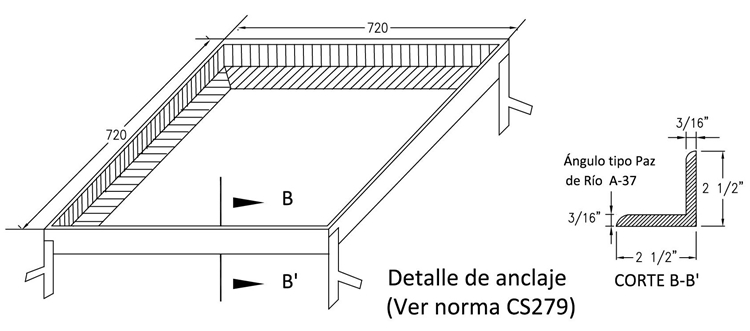
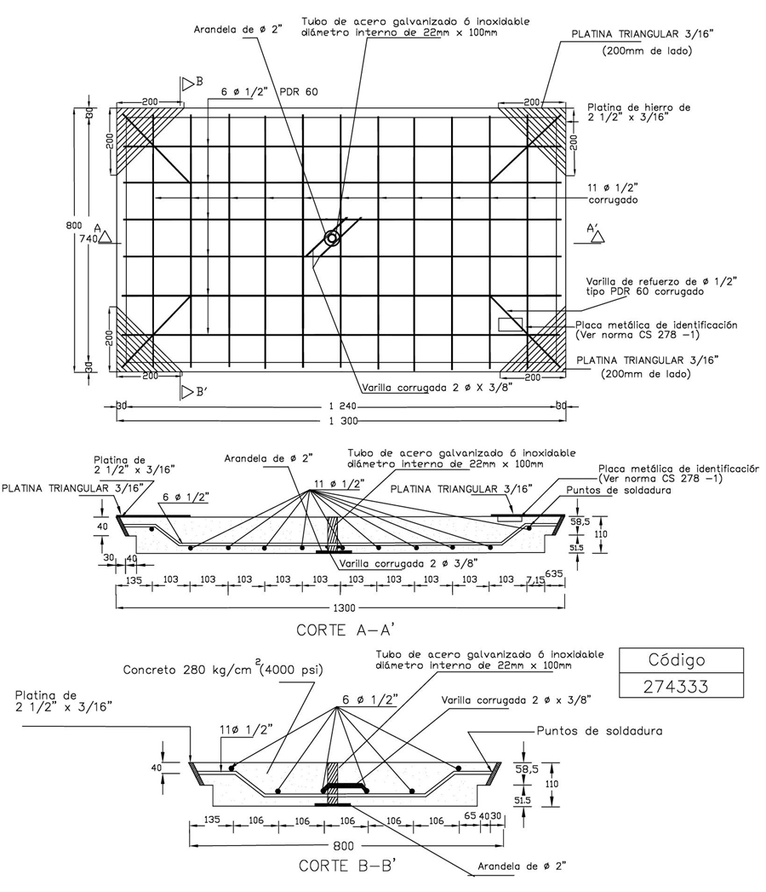

Siempre es más fácil conocer las normas ENEL-CODENSA
Rolex Rolex gold watch, compared with ordinary materials, gold watches are often expensive, but the replica rolex gold watch has the role of swiss replica watches hedging, so that it often becomes the first choice for collectors. The gold watch has value in the world, largely because the omega replica watch brand launched a commemorative limited edition watch or a replica hublot complex movement process or artistic attainments deep watches, mostly preferred gold precious metals such material. These watches tend to have a strong hedging function, therefore, Rolex Rolex gold watch reputation.

ET240 Tapas y marcos para cajas de inspección en redes subterraneas
Datos adicionales
Número de especificación
ET 240
Fecha de vigencia
19/04/2021
Herramientas adicionales
- Contenido Ocultar
- 1. OBJETO
- 2. ALCANCE
- 3. CONDICIONES DE SERVICIO
- 3.1 CONDICIONES AMBIENTALES.
- 3.2 CONDICIONES ELÉCTRICAS
- 3.3 CONDICIONES DE SERVICIO Y LUGAR DE INSTALACIÓN
- 4. SISTEMAS DE UNIDADES
- 5. NORMAS Y ESPECIFICACIONES TÉCNICAS.
- 6. DEFINICIONES
- 7. REQUERIMIENTOS TÉCNICOS PARTICULARES
- 7.1. PARÁMETROS GEOMÉTRICOS
- 7.2 RESISTENCIA A LA COMPRESIÓN DEL CONCRETO
- 7.3 ACERO DE REFUERZO PRINCIPAL
- 8. FABRICACION DE LAS TAPAS
- 8.1 VACIADO DEL CONCRETO
- 8.2 SOLDADURAS
- 8.3 CARACTERÍSTICAS QUÍMICAS
- 8.4 CARACTERÍSTICAS MECÁNICAS
- 9. ENSAYOS DE LABORATORIO
- 9.1 ENSAYOS DE LABORATORIO
- 9.2. PRUEBA DIMENSIONAL
- 9.3 OBLIGACIÓN DE EJECUCIÓN DE LOS ENSAYOS Y PRUEBAS
- 10. SUMINISTRO Y RECEPCION TAPAS Y MARCOS
- 10.1 TOLERANCIAS ACEPTADAS
- 10.2 MARCAS
- 10.3 RECEPCIÓN DE MARCOS Y TAPAS
- 11. REQUISITOS DE LAS OFERTAS
- 12. GARANTÍA DE FABRICA
- 13. INSPECCIÓN EN FABRICA
- 14. CERTIFICADOS DE CONFORMIDAD
- 15. PRESENTACIÓN DE LAS OFERTAS
1. OBJETO
Establecer las características, requisitos y ensayos técnicos que deben cumplir las tapas y marcos para cajas de inspección en andenes en el sistema subterráneo de distribución y alumbrado público.2. ALCANCE
Esta especificación técnica se aplicará en todas las tapas y marcos para cajas de inspección en andenes en el sistema subterráneo de distribución y alumbrado público que adquiera CODENSA S.A. ESP.3. CONDICIONES DE SERVICIO
3.1 CONDICIONES AMBIENTALES.
Las tapas y marcos para cajas de inspección en el sistema de distribución y alumbrado público serán empleados a la intemperie bajo las siguientes condiciones:| CARACTERÍSTICAS AMBIENTALES | |
| a. Altura sobre el nivel del mar | 600 a 2 900 m |
| b. Ambiente | Tropical |
| c. Humedad | Mayor al 90 % |
| d. Temperatura máxima y mínima | 45 ºC y - 5 ºC respectivamente. |
| e. Temperatura promedio | 14 ºC. |
| f. Polución | Alta con productos de la combustión y altamente contaminada por otros agentes. |
3.2 CONDICIONES ELÉCTRICAS
| Tensión Nominal del sistema | 34500 V – 11400 V – 480/277V - 380/220 V – 208/120 V |
| Frecuencia del sistema | 60 Hz |
3.3 CONDICIONES DE SERVICIO Y LUGAR DE INSTALACIÓN
Las tapas y marcos para cajas de inspección en redes subterráneas serán instalados, en cualquier zona del área de cobertura de CODENSA S.A.Los suelos donde son instalados podrán ser terrenos de relleno, arenosos, rocosos, arcillosos semiduros, con una capa de profundidad variable de humus, abarcando químicamente suelos desde ácidos a alcalinos y desde oxidantes a reductores con gran variedad en la cantidad y tipo de sales solubles.
Las tapas y marcos se utilizan así:
- En las cajas de inspección para alumbrado público y acometidas de baja tensión de las normas de construcción de CODENSA S.A. ESP (CS274, CS274-1 (fig 1), CS274-2 (fig 2), CS274-3, CS278-1 (fig 6))
- En las cajas de inspección sencilla para canalizaciones de MT y BT de las normas de construcción de CODENSA S.A. ESP (CS275, CS275-1 (fig 3), CS275-2, CS278 (fig 4), CS278-1 (fig 6))
- En las cajas de inspección doble para canalizaciones de MT y BT de las normas de construcción de CODENSA S.A. ESP (CS276, CS276-1 (fig 5), CS276-2, CS278 (fig 4), CS278-1 (fig 6))
- En las cajas de inspección triple para canalizaciones de MT, éstas cajas se conforman con un marco sencillo y uno doble de las normas de construcción de CODENSA S.A. ESP (CS275, CS275-1 (fig 3), CS275-2, CS276, CS276-1 (fig 5), CS276-2, CS278 (fig 4), CS278-1 (fig 6))
4. SISTEMAS DE UNIDADES
En todos los documentos técnicos se deben expresar las cantidades numéricas en unidades del sistema Internacional. Si se usan catálogos, folletos o planos, en sistemas diferentes de unidades, deben hacerse las conversiones respectivas.5. NORMAS Y ESPECIFICACIONES TÉCNICAS.
Las tapas y marcos deberán cumplir con las siguientes normas:| NORMA | DESCRIPCIÓN |
| ICONTEC 1 | Ensayo de doblamiento para productos metálicos |
| ICONTEC 2 | Ensayo de tracción para productos de acero. |
| ICONTEC 30 | Cemento Portland. Clasificación. |
| ICONTEC 121 | Cemento Pórtland. Especificaciones físicas y mecánicas |
| ICONTEC 174 | Especificaciones de los agregados para concreto |
| ICONTEC 402 | Siderurgia Perfiles de acero laminados en caliente para uso general. Ángulos de alas iguales, tolerancias en dimensiones y en masa. |
| ICONTEC 422 | Perfiles livianos y barras de acero al carbono acabadas en frío. |
| ICONTEC 673 | Ensayo de resistencia a la compresión, de cilindros normales de hormigón. |
| ICONTEC 1299 | Aditivos químicos para hormigón. |
| ICONTEC 2859-1 | Muestreo para inspección |
| NSR-10 | Código Colombiano de Construcciones Sismo Resistentes. |
| A.W.S D 12.1 | (A.C.I 318) - Prácticas recomendables para soldar acero de refuerzo, insertos metálicos y conexiones, en construcciones de concreto reforzado. |
| ASTM/SAE 1010 | Tipos de acero al carbón |
| ANSI/ASME B1.1 –1982 | Unified Inch Screw Threads |
Pueden emplearse otras normas internacionalmente reconocidas equivalentes o superiores a las aquí señaladas, siempre y cuando se ajusten a lo solicitado en la presente Especificación Técnica.
Las normas citadas en la presente especificación (o cualquier otra que llegare a ser aceptada por CODENSA S.A.) se refieren a su última revisión.
6. DEFINICIONES
Se establecen las siguientes definiciones para efectos de esta especificación técnica:- ADITIVO
Material diferente del cemento, agregados o agua que se añade al concreto, antes o durante la mezcla, para modificar una o varias de sus propiedades sin perjudicar su durabilidad, ni su capacidad para resistir esfuerzos. (NSR-10)
- AGREGADOS
Conjunto de partículas inertes, naturales o artificiales, tales como areana, grava, triturado, etc., que al mezclarse con el material cementante hidráulico y el agua, producen el concreto. (NRS-10)
- CONCRETO
Mezcla homogénea de material cementante, agregados inertes y agua, con o sin aditivos. (NSR-10)
- CONCRETO REFORZADO
Material constituido por concreto que tiene un refuerzo consistente en barras de acero corrugado, estribos transversales o mallas electro soldadas, colocadas principalmente en las zonas de tracción, en cuantías superiores a las mínimas especificadas en los Capítulos C.1 a C.21, (NSR-10) bajo la hipótesis de compatibilidad de deformaciones entre los materiales. (NSR-10)
- CURADO DEL CONCRETO
Tratamiento que se le da al concreto, una vez vaciado, para impedir la rápida evaporación del agua de amasado, suavizando la retracción y evitando el agrietamiento de la superficie.
- REFUERZO
Acero en una de las tres formas siguientes, colocado para absorber esfuerzos de tracción, compresión, de corte o de torsión en conjunto con el concreto:
(a) Grupo de barras corrugado que cumple la norma NTC 2289 (ASTM A706).
(b) Mallas electro soldadas.
(c) Alambres o cables de alta resistencia destinados principalmente al concreto pre esforzado. (NSR-10)
- VARILLA CORRUGADA
Varilla de acero con el núcleo de sección circular, en cuya superficie lleva unos resaltes, que tienen por objeto aumentar la adherencia entre el concreto y el acero.
- VARILLA TORSIONADA
Varilla corrugada que el fabricante de tapas somete a un proceso de torsión y alargamiento, con el fin de mejorar sus condiciones físicas y mecánicas.
- VIBRADO
Sistema de compactación del concreto mediante aparatos vibratorios de alta frecuencia que tiene por objeto disminuir la porosidad del concreto, distribuir uniformemente los áridos y obligar a que la mezcla cubra toda la superficie interior de la formaleta.
7. REQUERIMIENTOS TÉCNICOS PARTICULARES
Las tapas y marcos para cajas de inspección en el sistema de distribución y alumbrado público estará construido con materiales con la mejor calidad para ese fin, debiéndose descartar el empleo de materiales alterables por la humedad, radiación solar y otras condiciones ambientales desfavorables.Las tapas y marcos para el sistema de distribución y alumbrado público se construirán en forma soldada, en ángulo y varilla de acero SAE 1010, SAE 1020, A36, A37 ó similar debidamente autorizada por CODENSA S.A.
Las tapas y marcos deben ser autosoportables, rígidos y no debe presentar desajustes durante su transporte e instalación.
7.1. PARÁMETROS GEOMÉTRICOS
Las tapas y marcos para el sistema de distribución y alumbrado público será de la forma y dimensiones que se muestran en las figuras 1, 2, 3, 4, 5 y 6.7.1.1 Tapas y Marcos para acometidas BT y AP
Marco
Dimensiones del marco, según figura 1:
- Ancho interior 720 mm
- Largo interior 720 mm
- Altura 2 ½” (sin patas de anclaje)
El ángulo utilizado en el marco será de tipo A 37 ó similar debidamente autorizado por CODENSA y las dimensiones de 2 ½” X 2 ½” X 3/16” como mínimo, los cortes del ángulo en las esquinas debe ser a 45° grados.
Todas las soldaduras del marco deben efectuarse con soldaduras AWS 6010 y/o AWS 7018 hasta lograr una penetración total.
Tapa
Dimensiones de la tapa, según figuras 2 y 6:
- Ancho exterior 715 mm
- Largo exterior 715 mm
- Altura total 60 mm
La platina utilizada será tipo A – 37 ó similar debidamente autorizado por CODENSA y las dimensiones de 2 ½" X 3/16”; la varilla de refuerzo será tipo PDR 60 corrugada o similar debidamente autorizada por CODENSA y dimensión 3/8” de diámetro.
En las cuatro esquinas se colocará una platina triangular de 200 mm de lado y 3/16" de espesor que debe ir soldada internamente al marco de la tapa.
Todas las soldaduras de la tapa deben efectuarse con soldaduras AWS 6010 y/o AWS 7018 hasta lograr una penetración total; todas las uniones de la varilla con la platina deben estar soldadas con un área de por lo menos el diámetro de la varilla; todos los cruces de varillas deben ir soldados; todas las soldaduras deben estar libres de defectos tales como escoria atrapada, poros etc.; toda la escoria de soldadura debe ser retirada antes de fundir el concreto.
El concreto utilizado en la tapa debe ser de 4000 PSI (280 kg/cm2).
Todas las tapas deben tener una placa de identificación según figura 6.
7.1.2 Tapas y Marcos para cajas de inspección sencilla MT y BT
Marco
Dimensiones del marco, según figura 3:
- Ancho interior 805 mm
- Largo interior 1305 mm
- Altura 2 ½” (sin patas de anclaje)
El ángulo utilizado en el marco será de tipo A 37 ó similar debidamente autorizado por CODENSA y las dimensiones de 2 ½” X 2 ½” X 3/16”.
Todas las soldaduras del marco deben efectuarse con soldaduras AWS 6010 y/o AWS 7018 hasta lograr una penetración total
Tapa
Dimensiones de la tapa, según figuras 4 y 6:
- Ancho exterior 800 mm
- Largo exterior 1300 mm
- Altura total (110) mm
La platina utilizada será tipo A – 37 ó similar debidamente autorizado por CODENSA y las dimensiones de 2 ½” X 3/16”; la varilla de refuerzo será tipo PDR 60 corrugada o similar debidamente autorizada por CODENSA y dimensión 1/2” de diámetro.
En las cuatro esquinas se colocará una platina triangular de 200 mm de lado y 3/16’’ de espesor que debe ir soldada internamente al marco de la tapa.
Todas las soldaduras de la tapa deben efectuarse con soldaduras AWS 6010 y/o AWS 7018 hasta lograr una penetración total; todas las uniones de la varilla con la platina deben estar soldadas con un área de por lo menos el diámetro de la varilla; todos los cruces de varillas deben ir soldados; todas las soldaduras deben estar libres de defectos tales como escoria atrapada, poros etc.; toda la escoria de soldadura debe ser retirada antes de fundir el concreto.
El concreto utilizado en la tapa debe ser de 4000 PSI (280 kg/cm2)
Todas las tapas deben tener una placa de identificación según figura 6.
7.1.3 Tapas y Marcos para caja de inspección doble MT y BT
Marco
Dimensiones del marco, según figura 5:
- Ancho interior 1610 mm
- Largo interior 1305 mm
- Altura 2 ½” (sin patas de anclaje)
El ángulo utilizado en el marco será de tipo A 37 ó similar debidamente autorizado por CODENSA y las dimensiones de 2 ½” X 2 ½” X 3/16 como mínimo.
Todas las soldaduras del marco deben efectuarse con soldaduras AWS 6010 y/o AWS 7018 hasta lograr una penetración total
Tapa
La tapa utilizada para el marco de inspección doble para MT y BT será la misma del numeral 7.1.2.
7.1.4 Tapas y Marcos para caja de inspección triple para canalizaciones de MT
Las cajas de inspección triple se construye con un marco sencillo y uno doble como se indica en la norma CS 277 y CS 277-1
Marco
Dimensiones del marco, son la suma de los dos marcos:
- Ancho exterior 1435 mm ( 1620 mm + 815 mm)
- Largo exterior 1315 mm
- Altura 2 ½” (sin patas de anclaje)
El ángulo utilizado en el marco será de tipo A 37 ó similar debidamente autorizado por CODENSA y las dimensiones de 2 ½” X 2 ½” X 3/16 como mínimo.
Todas las soldaduras del marco deben efectuarse con soldaduras AWS 6010 y/o AWS 7018 hasta lograr una penetración total
Tapa
La tapa utilizada para el marco de inspección doble para MT y BT será la misma del numeral 7.1.2.
7.2 RESISTENCIA A LA COMPRESIÓN DEL CONCRETO
La resistencia mínima a la compresión para el concreto, debe ser de 280 kg/cm² (4000 psi). Esta resistencia se debe verificar mediante ensayos de laboratorio de los cilindros tomados de varias bachadas, de acuerdo con la norma ICONTEC 673.En cuanto a la calidad del concreto, se deben seguir los procedimientos establecidos en el capítulo C.4 del Código Colombiano de Construcciones Sismo Resistentes. Decreto 33 de 1998.
Con la debida anticipación, el fabricante debe presentar a consideración de CODENSA S.A. ESP, el diseño de la mezcla que va a utilizar. CODENSA S.A. ESP podrá exigir ensayos de prueba de la mezcla utilizada.
Para concretos que utilicen aditivos plastificantes, las mezclas se deberán diseñar utilizando el aditivo y de acuerdo con los ensayos de laboratorio que se deben realizar.
Las pruebas de asentamiento se realizarán cuando CODENSA S.A. ESP así lo exija. Los asentamientos resultantes deben coincidir con los especificados en el diseño de la mezcla.
Se realizarán ensayos de cilindros, con edades de 7, 14 y 28 días, calculando por proyección para las 2 primeras, la resistencia que tendrá el concreto a los 28 días.
La resistencia promedio de los ensayos de los cilindros debe ser superior o por lo menos igual a la especificada en el diseño más 85kg/cm2.
El costo de todos los ensayos de laboratorio, ordenados por CODENSA S.A. ESP, para el control de calidad del concreto, correrá por cuenta del fabricante.
7.3 ACERO DE REFUERZO PRINCIPAL
El acero de refuerzo utilizado en la fabricación de las tapas, debe cumplir con la norma NTC 2289.Las varillas de acero estructural deben tener esfuerzo nominal de fluencia mínimo de 60000 psi.
Bajo responsabilidad del fabricante se aceptará el torsionamiento del acero.
8. FABRICACION DE LAS TAPAS
Se pueden fabricar con el uso de uno de los sistemas existentes, siempre y cuando se cumpla con las especificaciones que se establecen en esta norma.En ningún caso se aceptarán las tapas amasados y compactados a mano.
8.1 VACIADO DEL CONCRETO
Al vaciar el concreto sobre la formaleta, se debe hacer lo más cerca a ésta, con el fin de evitar la disgregación de los materiales.El concreto se debe vaciar inmediatamente después de su amasado.
8.2 SOLDADURAS
En las uniones soldadas deben realizarse pases de soldadura E-6010 con suficiente amperaje para obtener máxima penetración entre las piezas; también deben realizarse pases sucesivos de soldadura E-7018 para alcanzar una altura mínima de refuerzo de 1/8”.Todas las soldaduras deben ser libres de defectos tales como escorias, inclusiones, poros, etc., y de la misma forma deben cumplir el código ASME capitulo IX.
8.3 CARACTERÍSTICAS QUÍMICAS
Las platinas y partes metálicas deben cumplir con las siguientes características:| CARACTERÍSTICAS QUIMICAS DE LÁMINAS Y PLATINAS | ||
| ELEMENTO | SAE 1010 | SAE 1020 |
| % Carbono | 0,08 a 0,13 | 0,18 a 0,22 |
| % Fósforo, máx. | 0,05 | 0,05 |
| % Azufre, máx. | 0,05 | 0,05 |
| % Manganeso | 0,3 a 0,6 | 0,3 a 0,6 |
8.4 CARACTERÍSTICAS MECÁNICAS
Las láminas y platinas utilizadas para la fabricación de tapas y marcos deberán poseer las siguientes características mecánicas mínimas:| CARACTERÍSTICAS MECÁNICAS | |
| ITEM | VALOR |
| Límite mínimo de fluencia del acero | 18,4 Kg/mm2 (180 MN/m2) |
| Resistencia a la tracción | 34,7 Kg/mm2 (340 MN/m2) |
| Elongación | 30% en 50 mm (2 pulgadas) |
9. ENSAYOS DE LABORATORIO
9.1 ENSAYOS DE LABORATORIO
El registro completo de los ensayos de los materiales y del concreto, debe estar disponible para el comprador, durante el tiempo que dure la fabricación y por los dos años siguientes a su terminación.9.1.1 Ensayos de Materiales del Concreto.
Todos los ensayos de los materiales y del concreto en sí, se deben realizar de acuerdo con la norma ICONTEC correspondiente.
El cemento debe cumplir con la norma ICONTEC 121.
El cemento analizado debe corresponder a aquel sobre el cual se base la dosificación del concreto, que se va a utilizar en la fabricación de la tapa.
Los agregados para el concreto deben cumplir con la norma ICONTEC 174.
El agregado grueso o grava, tendrá un tamaño máximo de 19 mm y mínimo de 10 mm.
El agregado fino o arena se debe lavar, y quedar libre de sustancias químicas, orgánicas o de cualquier naturaleza, que puedan perjudicar las características físicas de la mezcla.
El agua utilizada en la mezcla del concreto, debe estar limpia y libre de cantidades perjudiciales de aceites, ácidos, álcalis, sales, materias orgánicas u otras sustancias perjudiciales para el concreto o el acero de refuerzo y ajustarse a lo especificado en el capítulo C.3.4 del Código Colombiano de Construcciones Sismo Resistentes. Decreto 33 de 1998.
Para el Ensayo de la resistencia del concreto a la compresión, el fabricante o proveedor debe preparar cuatro cilindros diarios, de acuerdo con la norma ICONTEC 673 (ASTM C39) “Ensayo de resistencia a la compresión de cilindros normales de hormigón”. De estos cilindros diarios, se enviarán dos al laboratorio y se ensayarán a edades de 7 y 14 días. En caso que la resistencia de los 7 y 14 días, proyectada a los 28 días sea menor que f'cmin + 85 kg/cm2, se deberán ensayar los otros dos cilindros a los 28 días. Se halla la resistencia promedio de los cuatro cilindros y se verifica si cumple el requisito anterior. Si no cumple, se rechazará la producción del día en que fueron tomadas las cuatro muestras. Los resultados de los ensayos de estos cilindros se deberán suministrar al comprador para su conocimiento y control, y deben realizarse por un laboratorio aprobado por el comprador.
Nota. Para verificar si los materiales utilizados en la elaboración de la mezcla del concreto son de la calidad especificada, se deben realizar los ensayos de laboratorio correspondientes sobre muestras representativas de tales materiales.
9.1.2 Varillas de Refuerzo.
El fabricante deberá realizar los análisis de laboratorio de las probetas seleccionadas del lote de acero que se va a utilizar en el armado de las tapas.
En los ensayos de laboratorio de estas probetas, se deben suministrar los siguientes resultados:
- Carga máxima a la tracción.
- Límite de fluencia al 0,2%.
- Porcentaje de alargamiento en probeta de 200 mm (8").
9.2. PRUEBA DIMENSIONAL
La verificación de las dimensiones se hará con los instrumentos de medida que den la aproximación requerida (cinta metálica con divisiones de 1 mm para longitudes y calibrador para los diámetros y espesores). El tamaño de la muestra deberá estar de acuerdo NTC 2859-1.9.3 OBLIGACIÓN DE EJECUCIÓN DE LOS ENSAYOS Y PRUEBAS
Es obligación del fabricante realizar las siguientes pruebas de tapas, marcos y ensayos de materiales:1. Diseño de la mezcla incluyendo el análisis fisicoquímico del agua.
2. Ensayo de tracción del acero.
3. Ensayo de resistencia a la compresión de los cilindros de concreto.
4. Ensayo de pruebas dimensional
5. Inspección visual
Las pruebas correspondientes a los puntos 1,2 y 3, se deberán realizar por un laboratorio especializado y aceptado previamente por CODENSA S.A. ESP.
10. SUMINISTRO Y RECEPCION TAPAS Y MARCOS
10.1 TOLERANCIAS ACEPTADAS
Longitud, ancho y alto de la tapa y el marco.Se acepta una tolerancia en la longitud, ancho y alto de la tapa y el marco de ± 3 mm.
10.2 MARCAS
Se deben marcar las tapas según figura 6.10.3 RECEPCIÓN DE MARCOS Y TAPAS
En la inspección se realizará:-Prueba destructiva a una (1) tapa por referencia, a fin de validar el cumplimiento de las características técnicas de las varillas, concreto, soldadura, entre otras.
-Inspección visual, prueba dimensional y revisión de protocolos de pruebas.
Para llevar a cabo las labores de inspección y recepción de tapas y marcos, se establece el siguiente plan de muestreo, en el que se determina, de acuerdo con el tamaño del lote, el número de unidades a los cuales se les debe practicar la inspección visual para la aceptación o rechazo del mismo:
INSPECCIÓN VISUAL Y DIMENSIONAL
Nivel de Inspección general II, NCA = 4%
| Tamaño del lote | Tamaño de muestra | Aceptación | Rechazos |
| 2 - 25 | 3 | 0 | 1 |
| 26 - 90 | 13 | 1 | 2 |
| 91 -150 | 20 | 2 | 3 |
| 151-280 | 32 | 3 | 4 |
| 281-500 | 50 | 5 | 6 |
| 501-1200 | 80 | 7 | 8 |
En la semana anterior a la visita deben presentar el cuadro de control de producción y los soportes de los ensayos de compresión que demuestren el cumplimiento de los requisitos mecánicos del concreto. El proveedor deberá disponer de un control de producción que le permita a la Compañía verificar que previo a la fecha de inicio de la inspección, el concreto ha llegado al 90% de la capacidad mínima de rotura (compresión).
El tiempo normal de fraguado del concreto es 28 días. Si el proveedor utiliza aditivos acelerantes para el fraguado del concreto, el proveedor deberá presentar la curva del ensayo de rotura del concreto donde indique el tiempo en que se alcanza el 90% de la capacidad mínima de rotura.
Prueba de Compresión: Se realizará en la primera recepción una sola vez en la primera recepción, acorde a la Norma ANSI/SCTE 77 TIER 8 y/o similar previa aprobación por la Compañía, con un plan de Muestreo así:
| Tamaño de Muestra | % AQL | |
| Aceptación | Rechazo | |
| 3 | 0 | 1 |
10.3.1 Motivos de rechazo.
Se rechazarán los tapas y marcos por las siguientes causas:
10.3.1.1 Defectos críticos.
- La resistencia a la compresión del concreto no cumple con los requisitos mínimos especificados.
- Tapas con resanes, cuando la profundidad de estos haya llegado hasta el refuerzo principal.
- Los resanes superficiales hechos con mortero sin el aditivo apropiado para adherencia a concreto viejo o en forma inadecuada.
- Estructura metálica a la vista, ya sean varillas o alambres.
- Grietas transversales o longitudinales.
- El incumplimiento de las tolerancias especificadas, se consideran como defectos críticos.
- Incumplimiento de cualquier requisito establecido en la especificación técnica.
10.3.1.2 Defectos mayores.
- No colocación de la leyenda mencionada en el numeral 10.2
11. REQUISITOS DE LAS OFERTAS
El Oferente deberá incluir con su propuesta, la siguiente información:- Planilla de características técnicas garantizadas, la cual deberá ser diligenciada completamente, firmada y sellada por el oferente.
- Catálogos originales completos y actualizados del fabricante, que correspondan a los dispositivos cotizados, en la planilla de características técnicas garantizadas.
- Protocolos de pruebas de acuerdo con las normas indicadas en el numeral 5 de la presente especificación. En tales protocolos se deberán anotar las fechas de fabricación y pruebas del equipo, para permitir la verificación de las características técnicas garantizadas.
- Información adicional que considere aporta explicación a su diseño (dibujos, detalles, características de operación, dimensiones y pesos de los materiales ofertados).
CODENSA S.A. podrá descartar ofertas que no cumplan con las anteriores disposiciones, sin expresión de causa ni obligación de compensación.
12. GARANTÍA DE FABRICA
CODENSA S.A. E.S.P requiere como mínimo, un período de garantía de fábrica de veinticuatro (48) meses, a partir de la entrega de los bienes.13. INSPECCIÓN EN FABRICA
El suministrador enviará con no menos de quince (15) días calendario de anticipación, a la fecha programada para la realización de las pruebas en fábrica, el formato de protocolos de pruebasEl PROVEEDOR debe brindar plena colaboración al RESPONSABLE en el cumplimiento de sus funciones.
El valor de las pruebas y ensayos debe incluirse en los precios cotizados en la propuesta. CODENSA se reserva el derecho de descartar las propuestas que no ofrezcan pruebas, o si las ofrecidas son consideradas insuficientes para garantizar la calidad de los dispositivos.
14. CERTIFICADOS DE CONFORMIDAD
El oferente adjuntará con su propuesta el certificado de conformidad de producto con norma técnica, expedido por una entidad autorizada por la ONAC-Organismo Nacional de Acreditación de Colombia.15. PRESENTACIÓN DE LAS OFERTAS
El oferente deberá presentar su oferta técnica (en medio impreso) en el siguiente orden:- ANEXO 1: relación de los bienes cotizados.
- ANEXO 2: información del oferente.
- ANEXO 3: planillas de características técnicas garantizadas.
- EXCEPCIONES TÉCNICAS: apartado en el cual se deben relacionar las excepciones de carácter exclusivamente técnico de la oferta, respecto a los bienes solicitados. Si la oferta no presenta excepción, se indicaría expresamente en el mismo “NO HAY EXCEPCIONES”
- PROTOCOLO DE PRUEBAS: relación de los ensayos realizados, de acuerdo con lo indicado en el apartado 8 de la presente especificación.
- CERTIFICACIONES: Certificación del producto.
- EVIDENCIA TÉCNICA: relación de clientes, evidencia de su capacidad técnica y experiencias relacionadas con los materiales y/o equipos cotizados.
- GARANTÍA: carta de garantía de los bienes cotizados.
- NORMAS: normas técnicas aplicables a los bienes cotizados.
- CATÁLOGOS: catálogos originales completos y actualizados del fabricante, que correspondan a los datos bienes cotizados.
- INFORMACIÓN ADICIONAL: información adicional que se considere aporta explicación al diseño del dispositivo, así como las instrucciones de instalación, operación.
CODENSA S.A. podrá descartar ofertas que no cumplan con las anteriores disposiciones, sin expresión de causa ni obligación de compensación.
ANEXO 1. TABLA DE CARACTERISTICAS TÉCNICAS GARANTIZADAS
| N° | CARACTERISTICAS | OFRECIDAS | |||||
| 1 | Normas de Fabricación y pruebas | ||||||
| Marco | |||||||
| Tipo de Marco | CS 274 | CS 275 | CS 276 | CS 277 | |||
| 2 | Certificación de Producto | SI / NO | |||||
| Ente Certificador | |||||||
| N° de Certificado | |||||||
| 3 | Dimensiones Internas Figuras 1,2,3,4,5 y 6 | Ancho | |||||
| Largo | |||||||
| Alto | |||||||
| 4 | Materia Prima | Tipo de Angulo | |||||
| Dimensiones del ángulo | |||||||
| Composición química del ángulo | |||||||
| Tapa | |||||||
| Tipo de Tapa | * CS 274 | CS 278* | |||||
| 5 | Certificación de Producto | SI / NO | |||||
| Ente Certificador | |||||||
| N° de Certificado | |||||||
| 6 | Dimensiones Internas Figuras 1,2,3,4,5 y 6 | Ancho | |||||
| Largo | |||||||
| Alto | |||||||
| 7 | Materia Prima | Tipo de Platina | |||||
| Dimensiones de Platina | |||||||
| Composición química de la Platina | |||||||
| Tipo de la varilla | |||||||
| Dimensiones de la varilla | |||||||
| Composición química de la varilla | |||||||
| 8 | Posee las platinas triangulares según figuras 2 y 4 ( si / no) | ||||||
| 9 | Posee marcación según figura 6 (CS 278 - 1) ( si / no) | ||||||
| El valor de pruebas de recepción requeridas en el presente documento, se encuentra incluido? ( si / no) | |||||||
FIGURA 1- Marco Metálico para Tapas de Acometidas BT y AP (CS 274-1)

Marco metálico para tapas de acometidas BT y AP
NOTAS:
- Dimensiones en mm.
- La resistencia especificada del concreto sera de la compresión a los 28 días.
FIGURA 2 -Tapa para Acometidas BT y AP (CS 274-2)

Tapa para Acometidas BT y AP
FIGURA 3-Marco Metálico para Caja de Inspección Sencilla MT y BT (CS 275 –1)

NOTA:
-Dimensiones en mm
FIGURA 4-Tapa para caja de inspección MT y BT (CS 278)

NOTAS:
- Las dimensiones de esta tapa son únicas para los tres tipos de caja: sencilla, doble o triple.
- La resistencia especificada del concreto será de la compresión a los 28 días.
- La platina triangular de 3/16” estará soldada internamente al marco.
- El tubo de Ø 22 mm interno x 100 mm, llevará una arandela inmersa en concreto de Ø 2” en la parte inferior, el espesor del tubo y de la arandela será de mínimo 3 mm. Su uso será para levantamiento de la tapa con sistema hidráulico.
FIGURA 5 Marco metálico para caja de inspección doble MT y BT (CS 276-1)

NOTAS:
-Dimensiones en milímetros
FIGURA 6-Placa de identificación de las tapas (CS 278-1)